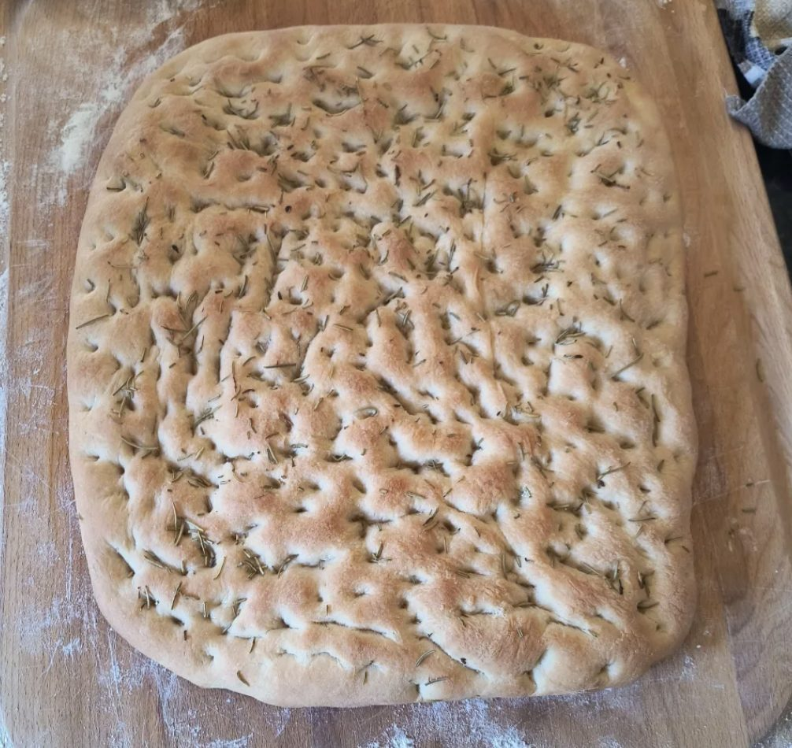

制作側の連想
天体望遠鏡の部位を、配置図にしてみる
天体望遠鏡の部位を図にしたもので、制作側の連想です。お店の理念・由来とは無関係で、実際の製品の仕様を示すものでもありません。 六つの部位に番号をふり、上の図と並べています。
凡例
六つの部位
- 1鏡筒本体になる長い筒で、前と後ろの部品をひとつにつなぐ。
- 2対物レンズ(筒先)筒の先端にある大きなレンズで、遠くからの光を最初に集める。
- 3接眼レンズ筒の後ろ側でのぞきこむ小さなレンズで、像を大きく見せる。
- 4ファインダー本体の上に乗る小さな照準用の筒で、向ける方向の目安にする。
- 5ピント調整つまみ筒の後ろ寄りにある回転つまみで、回して像の焼きを合わせる。
- 6三脚三本の脚で、筒全体を床から持ち上げて支える。
写真(イメージ)
写真(イメージ)



写真はイメージです。お店のものではありません。